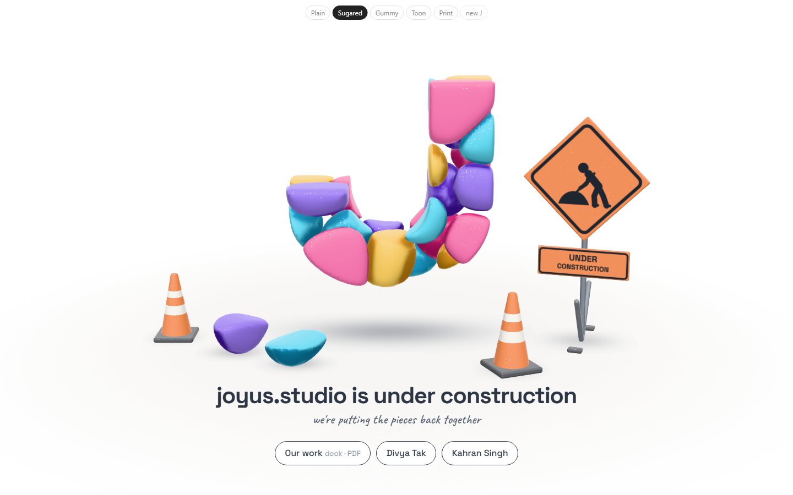
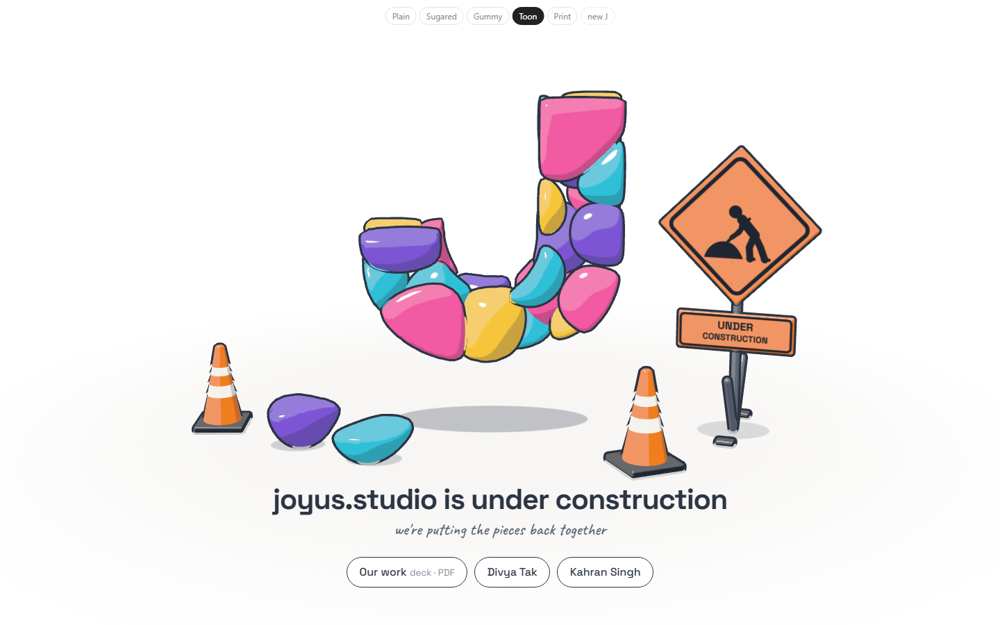
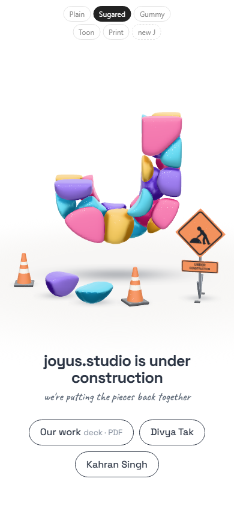
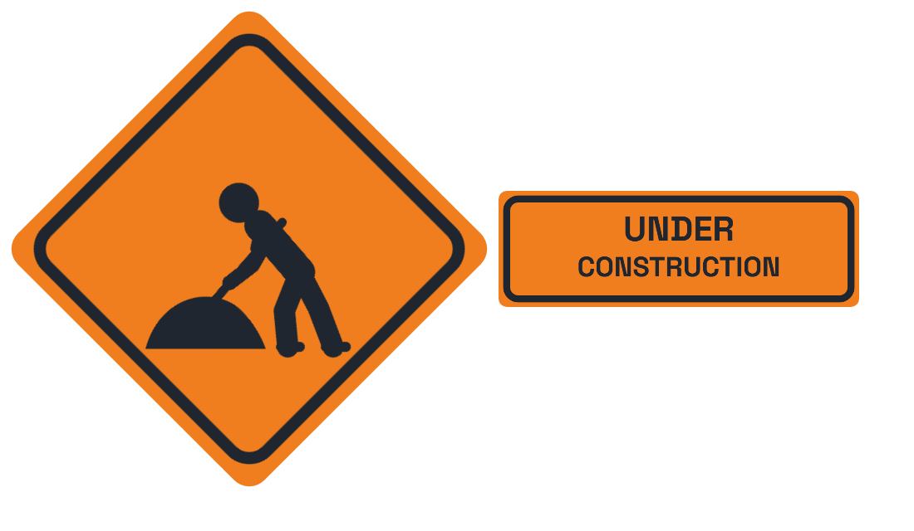
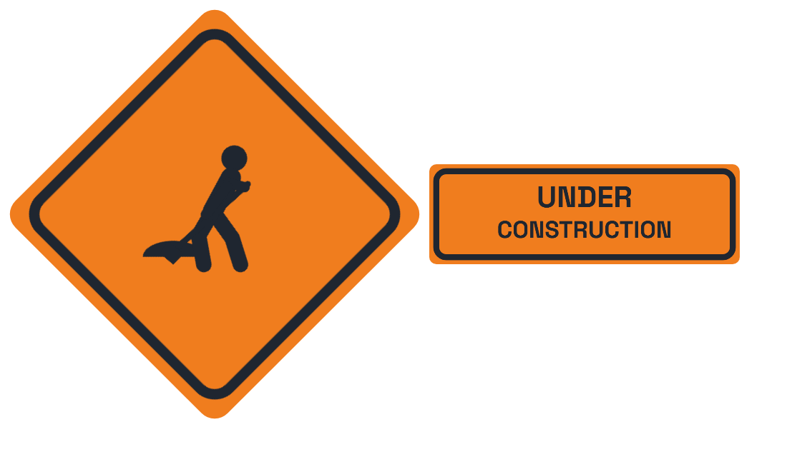
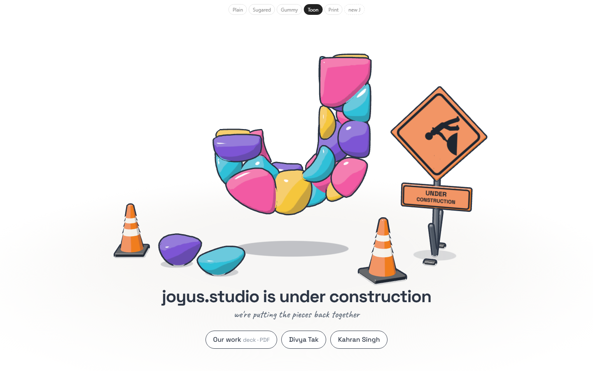

Study 21 · 6 October 2026
Road works
The J in Unbounded, 3D. The striped barrier is now what a site actually uses: the work-zone diamond on a folding stand, and cones.
Open the page (move your mouse)


Looks
The sign



Open
- Which look?
- The sign and the headline both say "under construction": keep both?
- Deck link, your site's address, homepage only or every page.
Test: page-test.mjs, 48 checks in a browser (the sign and cones stand on the floor, clear of the fallen stones; random Js; phone; reduced motion); read by check.cjs.